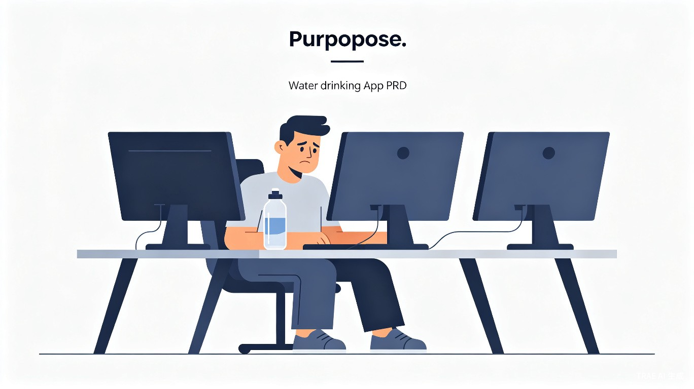
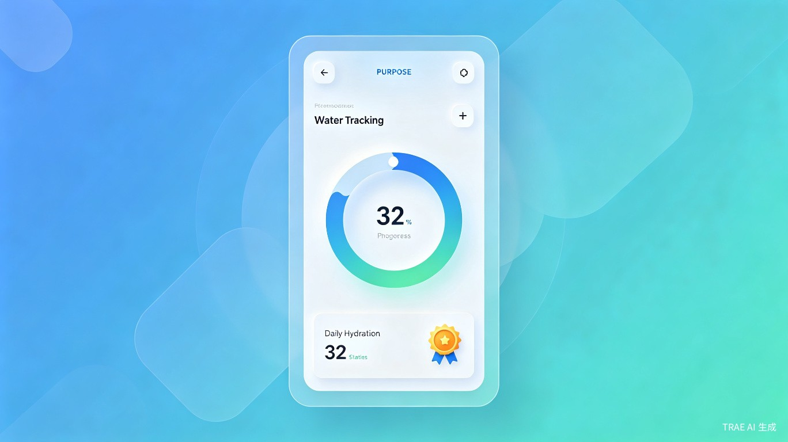

1
创意介绍
核心问题：每天喝水这件"小事"总是被遗忘，等到口渴才猛灌，或者一天结束时才发现几乎没喝水。
这个创意的灵感来源于现代上班族的真实日常——一坐就是几小时，专注起来根本想不起喝水。等意识到的时候，身体已经处于轻度脱水状态，直接影响精力和专注力。现有的解决方案要么过于简单粗暴（闹钟式提醒），要么缺乏持续的正反馈机制，难以真正帮助用户养成习惯。
我们希望通过一款设计优雅、机制科学的饮水提醒应用，将"记得喝水"从一件消耗意志力的事，转变为一种有成就感的日常仪式。
2
目标用户及痛点
核心用户画像
典型用户：久坐办公族 / 程序员
- 年龄：22-40岁
- 职业：程序员、设计师、文案、金融分析师等
- 工作模式：长时间对着电脑，注意力高度集中
- 健康意识：有一定健康意识，但缺乏执行力
- 典型场景：上午9点接了一杯水，下午3点发现一口没喝

三大核心痛点
🔕
缺乏自然提醒
喝水完全靠自觉，而自觉往往靠不住。没有温和且有效的中断机制。
📵
现有App体验差
要么太吵太烦被打断思路，要么提醒完就忘，缺乏持续的正反馈。
📊
没有量化感知
不知道自己一天到底喝了多少水，没有数据支撑，难以养成习惯。
3
价值与意义
健康角度
从被动到主动补水
将"口渴才喝"的被动补水转变为"定时主动补水"，避免长期轻度脱水导致的注意力下降、头痛、代谢变慢等健康隐患。
习惯养成
21天形成肌肉记忆
通过可视化进度环、连续打卡徽章等正反馈机制，把"记得喝水"从意志力消耗变成一种有成就感的日常仪式。
效率提升
最小成本维持最佳状态
每2小时喝一杯水，以最小的行为成本减少因脱水导致的疲劳和注意力涣散，维持全天最佳工作状态。
脱水对认知表现的影响
4
产品功能规划
核心功能模块
| 功能模块 | 功能描述 | 用户价值 | 优先级 |
|---|---|---|---|
| 智能提醒 | 基于工作节奏的温和提醒，支持自定义间隔（默认2小时） | 不打扰专注状态，自然唤醒喝水意识 | P0 |
| 可视化进度 | 环形进度条展示当日饮水目标完成度 | 量化感知，即时正反馈 | P0 |
| 饮水记录 | 一键记录饮水量，支持常用容量快捷选择 | 低摩擦操作，降低记录门槛 | P0 |
| 连续打卡 | 每日达标打卡，展示连续达标天数 | 游戏化激励，强化习惯养成 | P1 |
| 成就徽章 | 达成里程碑解锁徽章（7天、21天、100天等） | 长期激励，增强用户粘性 | P1 |
| 数据统计 | 周/月饮水趋势图表，平均摄入量分析 | 回顾与复盘，持续优化习惯 | P1 |
| 个性化设置 | 目标水量、提醒方式、免打扰时段自定义 | 适配不同用户的工作节奏 | P2 |
产品界面概念

提醒策略设计
- ✓温和渐进：首次提醒为轻柔通知，若未响应则逐步增强提醒强度
- ✓智能免打扰：检测到用户正在会议或专注模式时自动延后提醒
- ✓情境感知：结合时间、历史记录预测最佳提醒时机
- ✓一键记录：提醒通知上直接提供"已喝"快捷操作，无需打开App
5
用户旅程
关键旅程节点
| 阶段 | 用户行为 | 产品触点 | 设计目标 |
|---|---|---|---|
| 认知 | 意识到喝水不足的问题 | 应用商店、社交媒体 | 传达"轻松养成喝水习惯"的价值主张 |
| 首次使用 | 下载并设置个人目标 | onboarding 流程 | 降低设置门槛，30秒内完成配置 |
| 首次提醒 | 收到第一条喝水提醒 | 系统通知 | 温和不打扰，建立良好第一印象 |
| 首次记录 | 记录第一杯水 | App主界面 | 即时视觉反馈，进度环动画 |
| 首次达标 | 完成当日饮水目标 | 达标动画 + 徽章 | 强化成就感，触发分享欲望 |
| 习惯养成 | 连续21天达标 | 里程碑徽章 + 数据回顾 | 巩固习惯，转化为长期用户 |
6
技术架构
系统架构图
flowchart TB
subgraph Client["客户端层"]
A[移动端 App
React Native / Flutter]
B[通知服务
Local Push / FCM]
end
subgraph Backend["后端服务层"]
C[API Gateway]
D[用户服务]
E[饮水记录服务]
F[成就系统]
end
subgraph Data["数据层"]
G[(PostgreSQL
用户数据)]
H[(Redis
缓存)]
I[(时序数据库
饮水记录)]
end
A -->|HTTP/REST| C
C --> D
C --> E
C --> F
D --> G
E --> I
F --> G
D --> H
技术选型
| 层级 | 技术方案 | 选型理由 |
|---|---|---|
| 移动端 | Flutter | 跨平台一致体验，UI渲染性能优秀，适合动画丰富的健康类应用 |
| 后端 | Node.js + NestJS | 快速开发，TypeScript全栈统一，社区生态丰富 |
| 数据库 | PostgreSQL + Redis | PG支持JSON和时序扩展，Redis缓存高频读取数据 |
| 推送 | Firebase Cloud Messaging | 免费、稳定、跨平台支持良好 |
| 部署 | Docker + AWS/GCP | 容器化便于扩展，云厂商托管降低运维成本 |
7
成功指标
核心指标 (North Star)
核心目标：用户日均饮水量提升 50% 以上，连续打卡 21 天用户占比达到 30%。
指标体系
| 指标类别 | 具体指标 | 目标值 | 衡量方式 |
|---|---|---|---|
| 用户获取 | 日新增用户 (DNU) | 首月 1,000+ | 应用商店统计 |
| 用户激活 | 完成首次饮水记录率 | ≥ 70% | 漏斗分析 |
| 用户留存 | 次日留存 / 7日留存 / 30日留存 | 50% / 35% / 20% | cohort 分析 |
| 习惯养成 | 连续打卡 7天 / 21天用户占比 | 40% / 30% | 成就系统数据 |
| 健康效果 | 用户日均饮水量 | 从 800ml 提升至 1,500ml | 饮水记录聚合 |
| 用户满意度 | 应用商店评分 | ≥ 4.5 星 | 应用商店评论 |
预期用户增长曲线
8
产品路线图
MVP
第 1-2 个月
- 智能提醒（基础间隔提醒）
- 饮水记录与可视化进度环
- 每日目标设定
- 基础数据统计
V1.0
第 3-4 个月
- 连续打卡系统
- 成就徽章体系
- 周/月趋势图表
- 个性化提醒设置
V2.0
第 5-6 个月
- 社交分享功能
- 好友挑战/排行榜
- 健康数据导出
- 智能手表适配
9
风险与应对
| 风险类型 | 风险描述 | 应对策略 |
|---|---|---|
| 用户留存 | 用户新鲜感消退后停止使用 | 持续推出新徽章和挑战，结合社交机制增强粘性 |
| 通知疲劳 | 频繁提醒导致用户关闭通知 | 智能算法优化提醒时机，提供"勿扰模式"，允许用户自定义频率 |
| 竞品压力 | 大厂健康应用集成类似功能 | 聚焦细分场景（上班族），做深做透体验差异化 |
| 数据准确性 | 用户忘记记录导致数据失真 | 智能估算补录、定时回顾提醒、降低记录操作成本 |
10
总结
智能饮水提醒 App 瞄准久坐办公人群"忘记喝水"这一高频痛点，通过温和提醒 + 可视化进度 + 游戏化激励的三层设计，将喝水从"靠自觉"转变为"有仪式"。
产品以 21天习惯养成理论 为核心设计依据，在最小行为成本（每2小时一杯水）的前提下，帮助用户建立可持续的主动补水节律，最终实现健康与效率的双重提升。